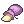

坂木與鎧甲超夢Giovanni & Armored Mewtwo

頭目招式
階段
| 階段 | 開始時 HP | 受到的傷害 | 頭目造成的傷害 | 使用招式 |
|---|---|---|---|---|
| 1 | 100% | ×0.5 | ×1 | 精神斬、精神擊破、暗影炮 |
| 2 | 60% | ×0.5 | ×1.1 | 精神斬、精神擊破、暗影炮、波導波動、裝甲衝鋒 |
| 3 | 30% | ×1 | ×1.25 | 精神斬、精神擊破、暗影炮、波導波動、裝甲衝鋒、精神新星 |
獎勵
| 稀有度 | 排名 | 經驗值 | 金錢 | 道具 | 隨機追加 |
|---|---|---|---|---|---|
| 金 | 前 10% | ×3 | 10,000 | 5×  高級球, 2× 高級球, 2×  木子果 木子果 | 50% 隨機超級石 50% 精神強念屬性光碟 （稀有） 35%  金珠 金珠2%  大師球 大師球40% 2×  神奇糖果 神奇糖果 |
| 銀 | 前 40% | ×2 | 6,000 | 3× 高級球, 2×  文柚果 文柚果 | 25% 精神強念屬性光碟 （稀有） 15% 金珠25% 神奇糖果 |
| 銅 | 前 100% | ×1.2 | 3,000 | 5×  超級球, 1× 文柚果 超級球, 1× 文柚果 | 10% 精神強念屬性光碟 （稀有） 10% 神奇糖果 |
每個階級另外獲得 1 個  心之鱗片 （交給招式回憶處）。
心之鱗片 （交給招式回憶處）。
每個階級都有的機率：1% 焦點鏡，另有 1% 機率獲得 1 個隨機屬性強化道具（絲綢圍巾、  黑帶、 銳利鳥嘴、
黑帶、 銳利鳥嘴、  毒針、
毒針、  金屬膜、
金屬膜、  木炭、
木炭、  神秘水滴、 奇跡種子、
神秘水滴、 奇跡種子、  磁鐵、
磁鐵、  彎曲的湯匙、 不融冰、
彎曲的湯匙、 不融冰、  龍之牙、
龍之牙、  黑色眼鏡、 海潮薰香).
黑色眼鏡、 海潮薰香).
要拿到獎勵：至少造成 0.2% 傷害，或保持活動 90 秒，或做出 6 次支援。排名依貢獻。
稀有樹果（擲骰）
| 排名 | 傳說 | 極稀有 | 稀有 |
|---|---|---|---|
| 金 | 1% | 15% | 40% ×2 |
| 銀 | 0.25% | 5% | 20% |
| 銅 | 0.05% | 1.5% | 8% |
伺服器為每位參加者、每次活動擲一次，由最高等級開始：最多 1 份樹果獎勵。樹果在該等級內隨機。傳說（IV）樹果＝帶星號的（EVENT）堆疊：可以種植，也能在交易所出售或交換。